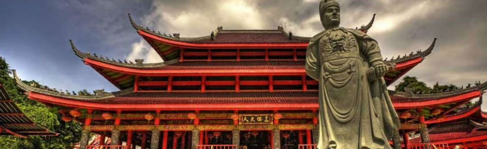

Sejarah Kota Semarang
Sejarah Kota Semarang bermula sekitar abad ke-8 M, yaitu daerah pesisir Pulau Jawa yang bernama Pragota (sekarang menjadi Bergota) dan merupakan bagian dari kerajaan Mataram Kuno.
Daerah tersebut pada masa itu merupakan pelabuhan dan di depannya terdapat gugusan pulau-pulau kecil.
Akibat pengendapan, yang hingga sekarang masih terus berlangsung, gugusan tersebut sekarang menyatu membentuk daratan. Bagian kota Semarang Bawah yang dikenal sekarang ini dengan demikian dahulu merupakan laut.
Pelabuhan tersebut diperkirakan berada di daerah Pasar Bulu sekarang dan memanjang masuk ke Pelabuhan Simongan, tempat armada Laksamana Cheng Ho bersandar pada tahun 1405 M. Jejak jejak tempat pendaratan Cheng Ho ini sampai sekarang masih dikunjungi di Sam Po Kong (Gedung Batu) dan
replika kapalnya berada di sungai di depan Kelenteng Tay Kak Sie, Gang Lombok.
Sejarah Kota Semarang
Patung laksamana cheng ho semarangSejarah Kota Semarang bermula sekitar abad ke-8 M, yaitu daerah pesisir Pulau Jawa yang bernama Pragota (sekarang menjadi Bergota) dan merupakan bagian dari kerajaan Mataram Kuno.
Daerah tersebut pada masa itu merupakan pelabuhan dan di depannya terdapat gugusan pulau-pulau kecil.
Akibat pengendapan, yang hingga sekarang masih terus berlangsung, gugusan tersebut sekarang menyatu membentuk daratan. Bagian kota Semarang Bawah yang dikenal sekarang ini dengan demikian dahulu merupakan laut.
Pelabuhan tersebut diperkirakan berada di daerah Pasar Bulu sekarang dan memanjang masuk ke Pelabuhan Simongan, tempat armada Laksamana Cheng Ho bersandar pada tahun 1405 M. Jejak jejak tempat pendaratan Cheng Ho ini sampai sekarang masih dikunjungi di Sam Po Kong (Gedung Batu)
dan replika kapalnya berada di sungai di depan Kelenteng Tay Kak Sie, Gang Lombok.
Pada akhir abad ke-15 M ada seseorang ditempatkan oleh Kerajaan Demak, dikenal sebagai Pangeran Made Pandan (Sunan Pandanaran I), untuk menyebarkan agama Islam dari perbukitan Pragota. Dari waktu ke waktu daerah itu semakin subur, dari sela-sela kesuburan itu muncullah pohon asam yang arang (bahasa Jawa: Asem Arang), sehingga memberikan gelar atau nama daerah itu menjadi Semarang.
Geografis Kota Semarang
.png)
Luas dan batas wilayah, Kota Semarang dengan luas wilayah 373,70 Km2.
Secara administratif Kota Semarang terbagi menjadi 16 Kecamatan dan 177 Kelurahan.
Dari 16 Kecamatan yang ada, terdapat 2 Kecamatan yang mempunyai wilayah terluas yaitu Kecamatan Mijen, dengan luas wilayah 57,55 Km2 dan Kecamatan Gunungpati, dengan luas wilayah 54,11 Km2.
Kedua Kecamatan tersebut terletak di bagian selatan yang merupakan wilayah perbukitan yang sebagian besar wilayahnya masih memiliki potensi pertanian dan perkebunan.
Sedangkan kecamatan yang mempunyai luas terkecil adalah Kecamatan Semarang Selatan, dengan luas wilayah 5,93 Km2 diikuti oleh Kecamatan Semarang Tengah, dengan luas wilayah 6,14 Km2.
Wisata Kota Semarang
banyak sekali destinasi wisata yang berada didaerah Kota Semarang yang wajib dikunjungi ketika berada diSemarang contohnya:
- Lawang Sewu
video lawang sewu 
adalah bangunan perkantoran yang terletak di seberang Tugu Muda, Kota Semarang, Jawa Tengah, Indonesia,
yang dibangun sebagai kantor pusat Nederlandsch-Indische Spoorweg Maatschappij (NIS).
Bangunan ini berstatus sebagai aset Kereta Api Indonesia (KAI) karena merupakan buah dari perebutan NIS oleh Djawatan Kereta Api Republik Indonesia (DKARI) pada masa Perang Kemerdekaan.
Saat ini bangunan tersebut dijadikan sebagai museum dan galeri sejarah perkeretaapian oleh Unit Pusat Pelestarian dan Desain Arsitektur
- Kota Lama

Kota lama Semarang sudah ada sejak pertama kali pada abad 18 ketika itu masih era pemerintahan Hindia Belanda.
Pada jaman dulu kota tua merupakan pusat pemerintahan Semarang dan pusat pemukiman para masyarakat Belanda.
Seperti bangunan Belanda lain nya, kawasan kota tua di bangun dengan model perumahan yang ter-konsep dan memiliki nilai seni tinggi.
Sampai sekarang di sekeliling kota tua terdapat sebuah kanal air dilengkapi dengan jembatan,
yang salah satu nya merupakan jembatan Berok masih ada sampai aktif hingga sekarang.
- Sam Po Kong

Sejarah Klenteng Sam Poo Kong dimulai sekitar tahun 1406,
saat Laksamana Ceng Ho datang kembali bersama armada lautnya, serta puluhan ribu pasukannya di Pulau Jawa.
Kedatangannya dengan maksud untuk berdagang, serta menjalin kerjasama. Dan pada tahun 1416,
sang laksamana melakukan perjalan di Pulau Jawa bersama pasukannya.